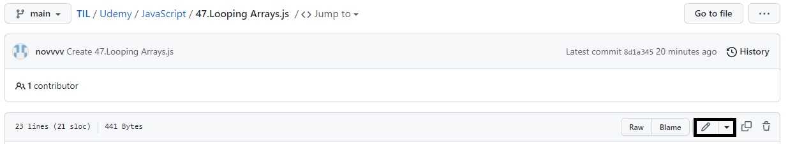
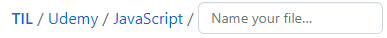
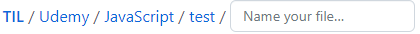
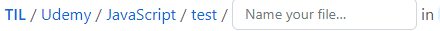
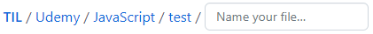
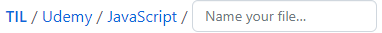

안녕하세요 nov입니다.
저는 깃허브에 매일 공부한 코드를 저장해 두는데요, 커밋 기록이 쌓여 가는 것을 보고 있으면 뭔가 열심히 하고 있다는 자신감이 생기고 동기부여가 되는것 같아 더욱 열심히 하게 되는것 같습니다.
그러나 깃허브를 처음 시작하면 디렉터리를 생성하고 삭제하는 것 조차 어떻게 해야 할 지 몰라 헤매게 되는데요,
이번 포스팅에서는 Github 웹페이지에서 디렉터리(폴더)를 다루는 방법에 대해서 정리해 보도록 하겠습니다.
우선 원하는 디렉터리로 이동한 뒤, Edit this file 버튼을 클릭합니다.

1. 디렉터리 생성 → 파일 이름을 적은 뒤 / 를 입력하면 새로운 폴더가 생성됩니다.
command : text/
 
2. 디렉터리 이름 변경 → 백 슬레시 (/) 바로 뒤에서 백 스페이스 키를 누르면 폴더의 이름을 변경할 수 있습니다.
command : BackSpace(←)

3. 디렉터리 삭제 → ../ 명령어를 입력하면 근접 상위 디렉터리가 삭제됩니다.
command : ../
 
이상으로 깃허브 웹페이지에서 디렉터리를 생성 / 삭제 및 변경하는 방법에 대해 간략하게 알아 보았습니다.
개인적인 공부 기록용도로 작성한 글 이기에 잘못된 내용을 포함하고 있을 수 있으며,
혹여나 틀린 정보가 존재한다면 언제든지 지적해 주시기 바랍니다.?